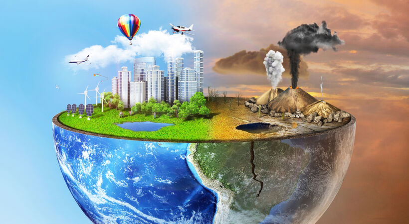

Pollution
Ruchika Sharma, XII A, March 24 2020
Pollution has been a burning issue for the last 100 years, but little has been done to take steps towards rebuilding our ecosystem and saving it from the brink of collapse. We, occupying the topmost strata on the ecological pyramid, should be conscious of the environment around us.
Meddling with natural processes can have disastrous long term effects that will push the entire Earth towards mass destruction. Pollutants must be identified and effectively dealt with to pull off a last saving grace for the sake of our co-habitants. It must be kept in mind that pollutants are not always toxic substances. Any unwanted substance that can disrupt the functioning of a natural system can be categorized as a pollutant.
Some pollutants don’t have any shape or size. For example, temperature rise in our atmosphere by a few degrees for a short time will not have any significant effect, but the same amount of rising in temperature in a water body will kill the thermo-sensitive organisms.
A deep sense of responsibility towards nature and empathy for all the organisms residing on Earth will go a long way in saving our planet from destruction and help us to survive for longer.
Global Warming
Hriday Aggarwal, IX A, December 8 2020

Global warming is the cumulative rise in average global temperatures on earth measured over a long period. It has been attributed to the large scale deforestation by man for different purposes. We consume a lot of fuel annually. With an increase in the human population, it has become impossible to meet people’s fuel requirements. Natural resources are limited, and we must use them judiciously. If we exploit natural resources like forests and water bodies, it will create an imbalance in the ecosystem. Global warming is not limited to the rise in temperature. It has other effects too.
Many parts of the world are witnessing natural disasters like hurricanes, floods, and avalanches. All these phenomena are a direct result of global warming. To prevent our environment from the harmful effects of global warming, we must restoring our ecosystem. Man has been exploiting natural resources without giving the environment anything in return. This needs to be stopped. We must all join forces to make this world a better place for our future generations who deserve this planet as much as we do. The basic step that we can follow to increase the overall health of our planet is planting trees. Afforestation should be our primary goal. The earth can become a better place if we pledge to plant as many trees as we can in our lifetime.
Deforestation
Prabhpreet Kaur, X C, July 28 2020

Cutting down trees and vegetation from forest area is known as ‘Deforestation'. Many reasons are responsible for this. The growth rate of people, lack of awareness, residential requirement, industrial requirement, etc. are responsible. Deforestation is a bad alarming for our future earth. Every country has at least 25 percent of the forest area according to its total area. But it is very difficult to keep it. We lose many wildlife species. Our food chain is changing day by day. Because of our climate change. All of these are the result of deforestation. People are removing forest area and making the residential area. But this forest area is working as a barrier to wind storming. Sometimes it is the main source for the livelihood of some people. Trees lock soil loss in the flooding season. Give shelter for animals. Communities are suffering due to deforestation. Then animals are attacking the local area and cause a worse situation. Deforestation caused environmental pollution. Climate change is also for deforestation. More people need more area, shelter, food, and other rights. But by maintaining a planning way we can meet all the requirements. Cutting down forest areas unnecessarily is not the right way. We should follow a guideline so that we can solve both sides. The utilization of rules for cutting down forest areas is important. Planting more trees is the best way of recovering deforestation. We can do it in the fallow area. Such as both sides of roads, railway lines, the fallow area in our homestead, etc.